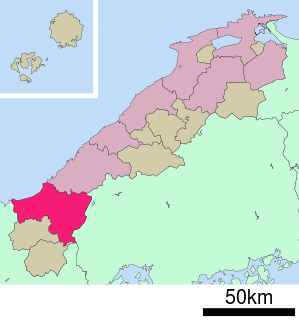
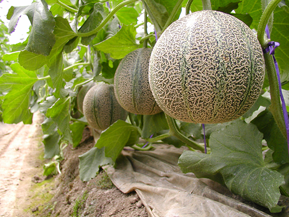

益田市って？
|

益田市は、島根県西部の日本海に面した位置にある市(右の写真の赤い箇所)です。人口は45,000人ほどで、島根県内最大の市面積を持ちます。 島根県芸術文化センター グラントワや益田市立雪舟の郷記念館などの芸術的側面と、 あと、あの有名なスーパーキヌヤの本店があります。二階建てです。すごい。 |
主要産業
|
・天然アユ 益田市の中心を通る高津川では、6月から9月の間、漁業許可証を持つ者に限りアユ釣りが許可されます。 高津川で釣れた天然のアユは、1kg10,000円を超える高値で売買されるそうです。  ・アムスメロン 西いわみ地区本部を代表する特産物のアムスメロンは、昭和51年に益田市飯田町で本格的な栽培が始まりました。 栽培方法は全て立体栽培で、仕立ては2本仕立て1つる1果どりとしており、専用の配合肥料を使って育てます。 アムスメロンと並び、贈答用として人気が高いアールスメロンも栽培されています。 |